Our Team
Meet our dedicated team members who work tirelessly to advance our research and contribute to the scientific community.
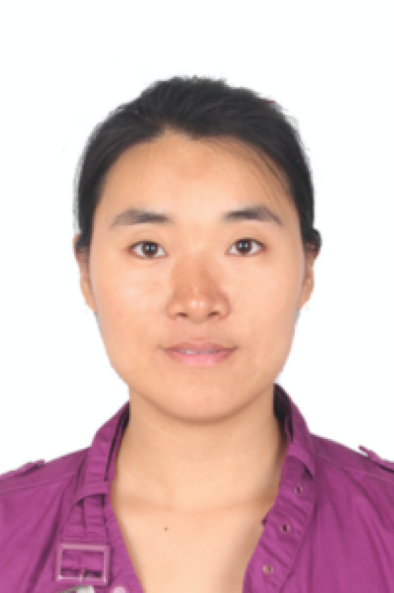
Wang Xiuyi (王秀祎)
Assistant Research FellowResearch Interests: I investigate the functional differentiation of subnetworks within multiple demand network and default mode network and how their functional differentiation emerges across the brain.
Zhao Wanying (赵婉莹)
Assistant Research FellowResearch Interests: The Influence of Gestural Actions on Verbal Information and Its Brain Mechanism of Integration; Compensatory Mechanisms of Gestural Actions for Speech Disorders; The Mechanism of Speech Generation and Development under the Theory of Embodied Cognition.
You Siqi (尤思琦)
PostDoc FellowResearch Interests: Research Interests: My research is dedicated to understanding the therapeutic effects of music and its cognitive neural mechanisms, with a specific focus on how music modulates the multi-system mechanisms of acute stress responses. Utilizing MRI for neuroimaging, physiological multi-channel recording for assessing physiological responses, cortisol analysis for hormonal changes, and music parameter analysis for understanding musical characteristics, I seek to delineate the complex interplay between musical interventions and the body’s stress-regulating systems.
Jiang Xintong (姜欣桐)
PostDoc FellowResearch Interests: My principal research interest is centered around the electrophysiological, neuroimaging, and neurometabolic mechanisms underlying music reward processing. At present, I predominantly employ multi-channel physiology, EEG, fMRI, and fMRS techniques to explore the reward system, autonomic nervous responses, and neurotransmitter metabolic mechanisms that are triggered by the chilling music. Moreover, I also direct my attention to the neural mechanism of music reward prediction error encoded by dopamine.
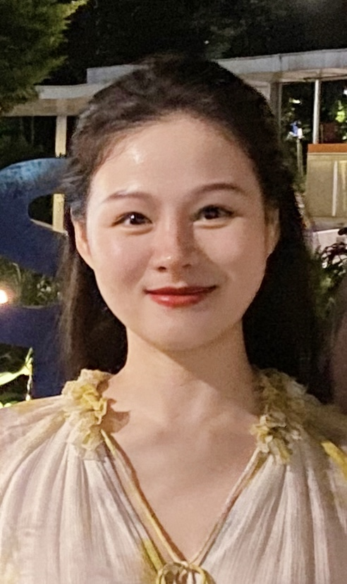
Chen Hou (陈后)
Lab Manager
Wu Guowei (吴国伟)
PhD StudentResearch Interests: My research endeavors are centered on uncovering the organizational frameworks and segmentation nuances of language functional brain networks, alongside investigating the intricate process of cross-modal semantic alignment among multimodal objects.
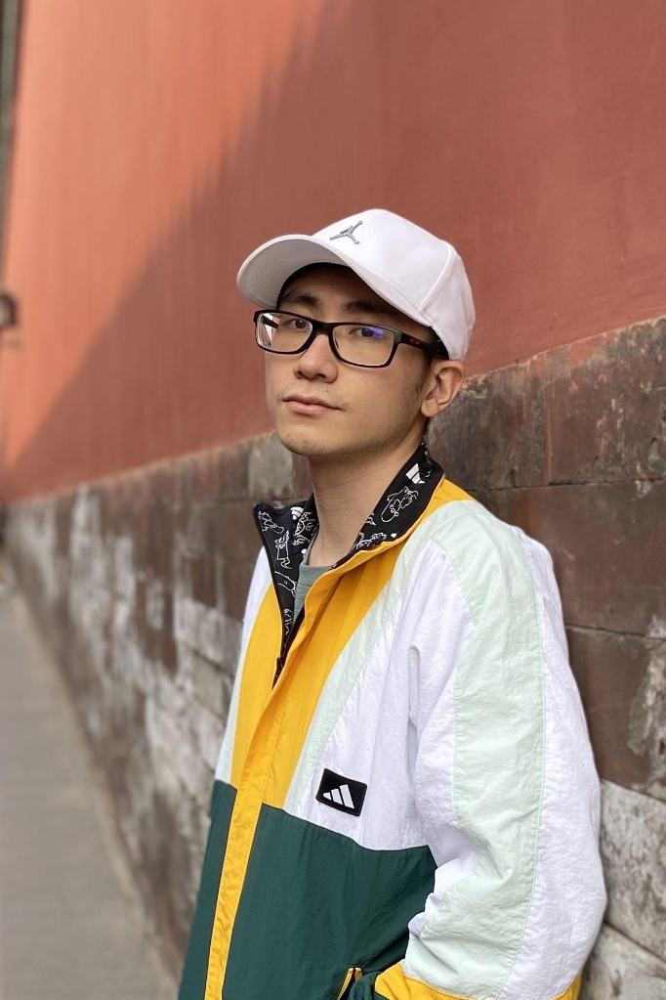
Lyu Baihan (吕柏翰)
PhD StudentResearch Interests: My research primarily focuses on the predictive coding mechanisms underlying speech comprehension. I integrate multiple neuroimaging techniques (fMRI and MEG) and state-of-the-art language models, to examine how top-down predictions interact with bottom-up sensory input.
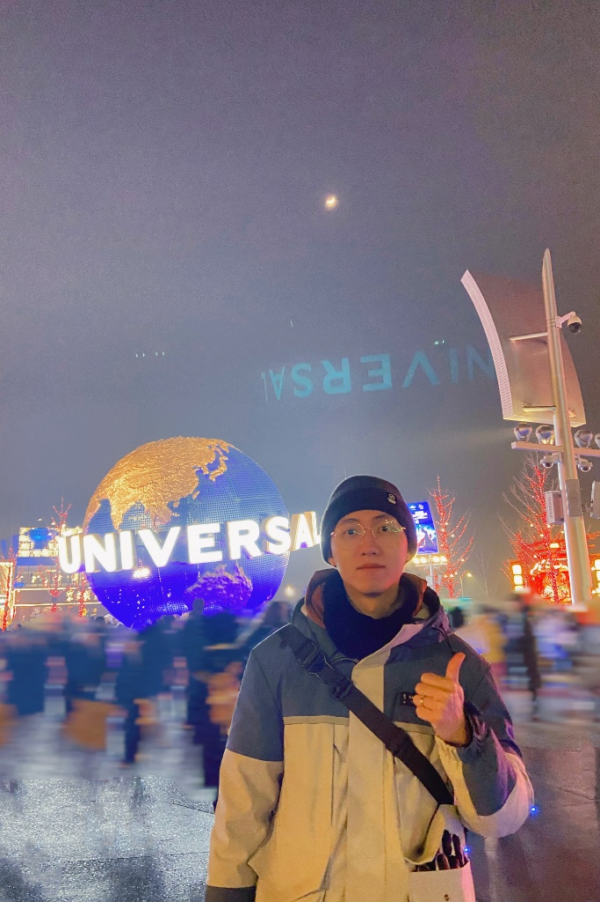
Yang Jiawang (杨嘉望)
PhD StudentResearch Interests:I primarily investigate audiovisual integration mechanisms using various psychophysical methods (i.e., EEG, MEG) and information theoretical approaches. There is significant heterogeneity in audiovisual integration, influenced by factors such as attention, semantic state, and the type of visual stimuli (e.g., gestures or lip movements). My aim is to elucidate these complex integration processes and develop a novel brain-inspired model that simulates audiovisual integration.
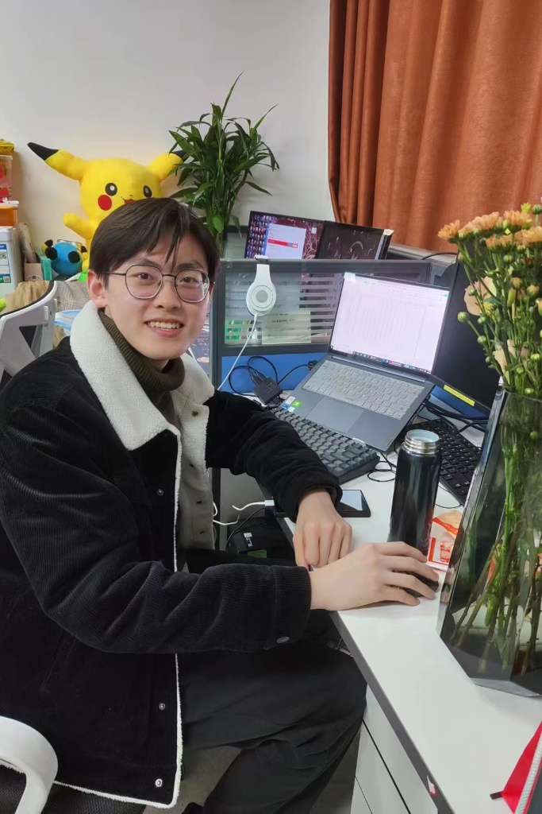
Hua Shan (华山)
PhD StudentResearch Interests: my research interest mainly focus on using MEG/EEG, eyemovement recoding to explore the musical rhythmic perception, including hierarchical rhythmic structure in music, sensorimotor synchronization during listening and pleasurable feelings induced by rhythm.
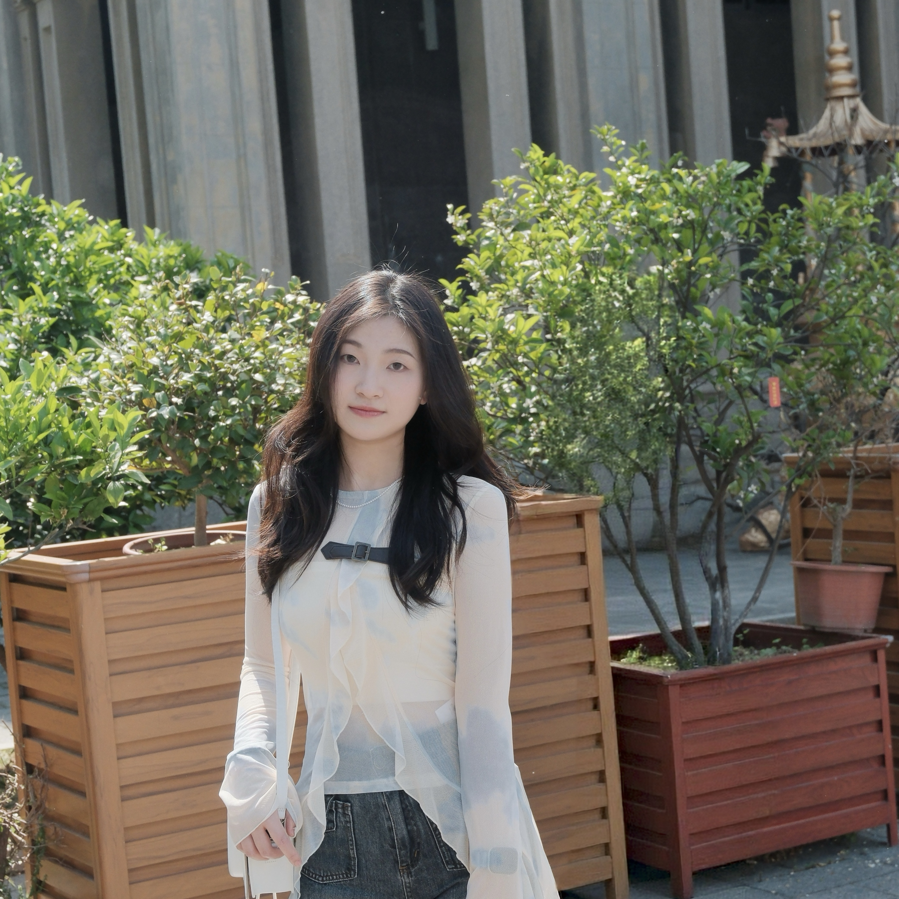
Wu Danni (吴丹妮)
PhD StudentResearch Interests: My research primarily focuses on the neural mechanisms underlying musical structure processing, with particular emphasis on musical segmentation and predictive mechanisms during music listening. I aim to investigate these processes using EEG/MEG and eye-movement recording.
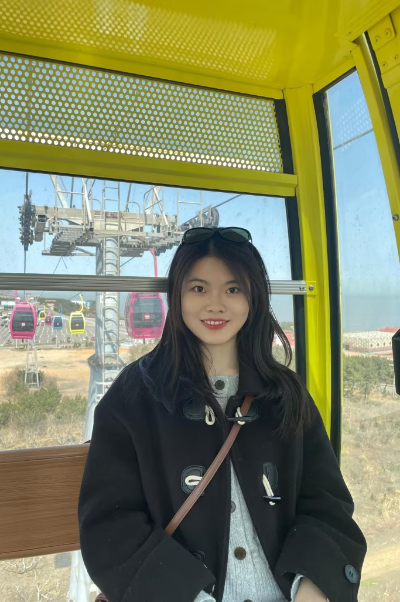
Zhu Jinyao (朱瑾瑶)
PhD StudentEducational Background: September 2023 - Present Institute of Psychology, Chinese Academy of Sciences / Sino-Danish College Major: Cognitive Neuroscience September 2019 - July 2023 Shaanxi Normal University Major: Psychology Research Focus: Cognitive Neural Mechanisms of Conscious and Unconscious Visual Temporal Cues in Enhancing Speech Recognition in Noise
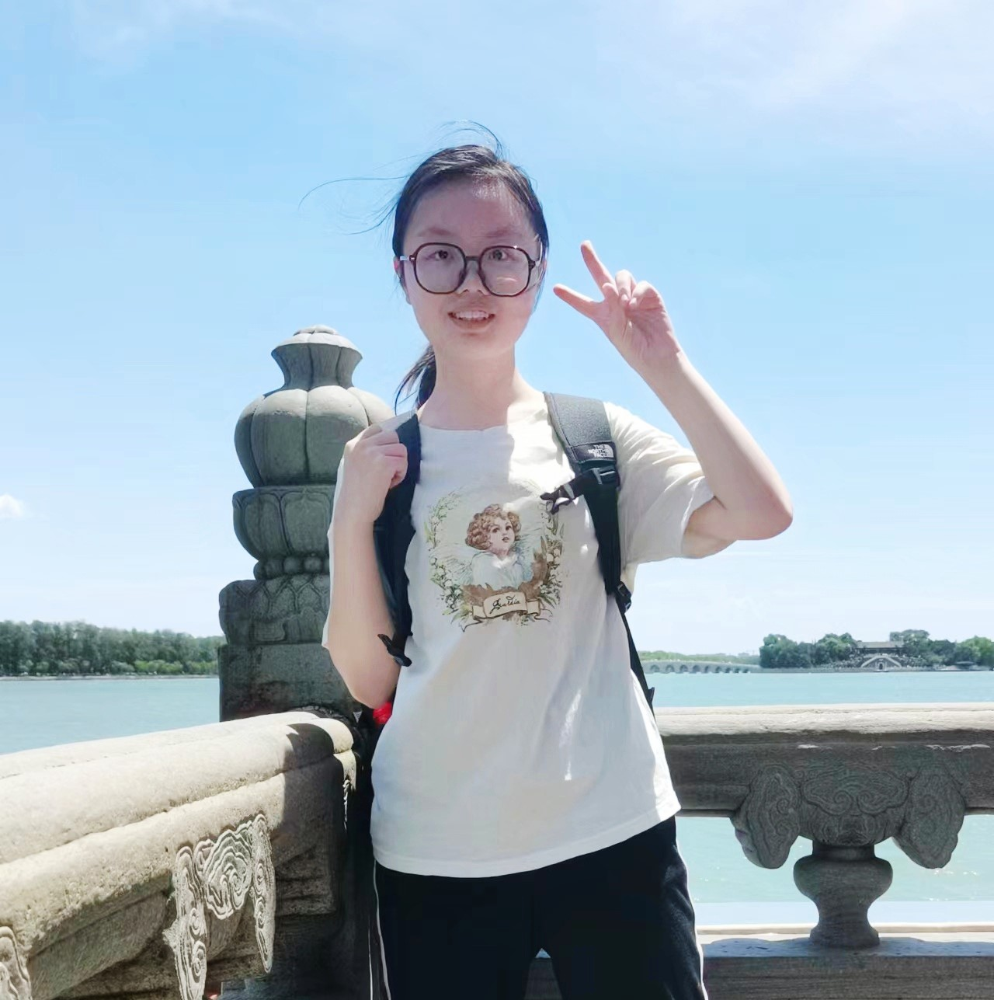
Li Zhouyi (李周一)
Master StudentMy research centers on multimodal semantic integration, where both psychophysical and information-theoretic metrics are employed to investigate the structures of the human mental model.
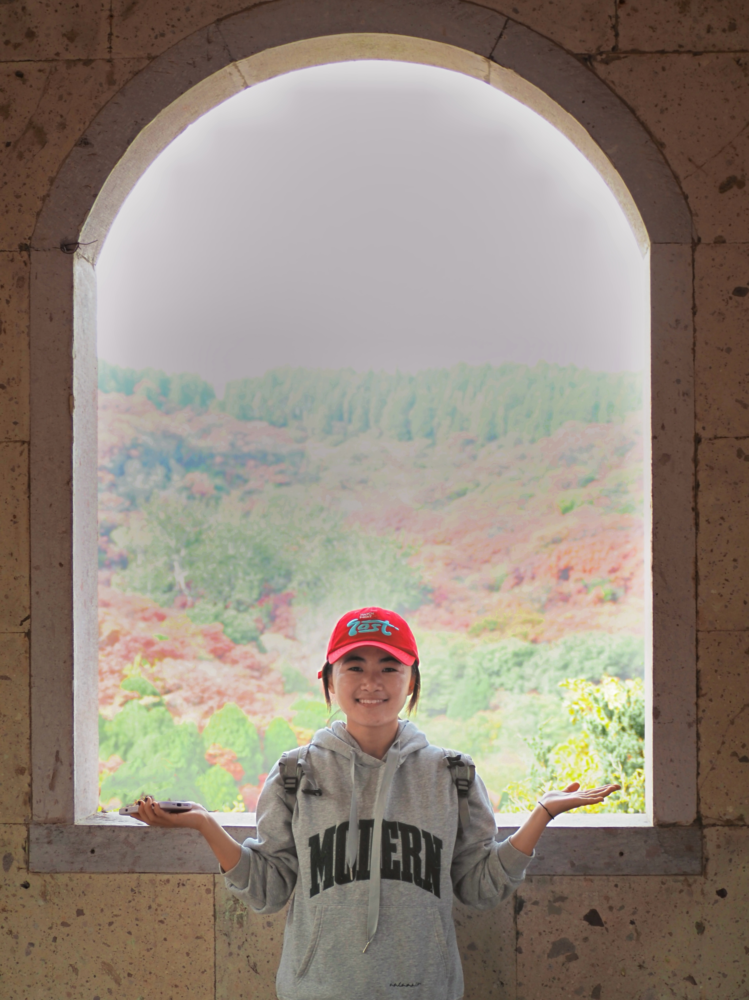
Wang Yue (王悦)
Master StudentMy research focuses on language comprehension and predictive processing. Using neuroimaging techniques such as fMRI and MEG, together with computational models, I investigate how the brain represents and integrates information during naturalistic language understanding.
Our Graduates
Meet our accomplished graduates who have contributed to our research and moved on to new endeavors.

Xinglidongsheng (邢立冬生)
Master StudentBrief description or current position
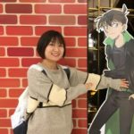
Li Xiang (李想)
Master StudentHigher Education Press
Zhou Xiaoqian (周小倩)
Master StudentYali High School
Zhang Lei (张磊)
Phd StudentPostdoctoral Fellow at the University of Toronto
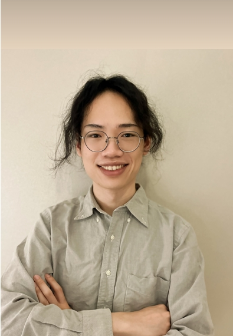
Liang Baishen (梁柏燊)
Phd StudentPostdoctoral Associate at Duke University
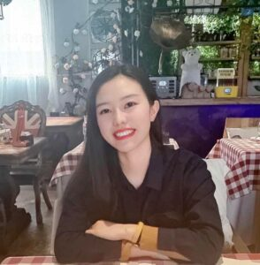
Li Xiaonan (李晓楠)
Phd Student
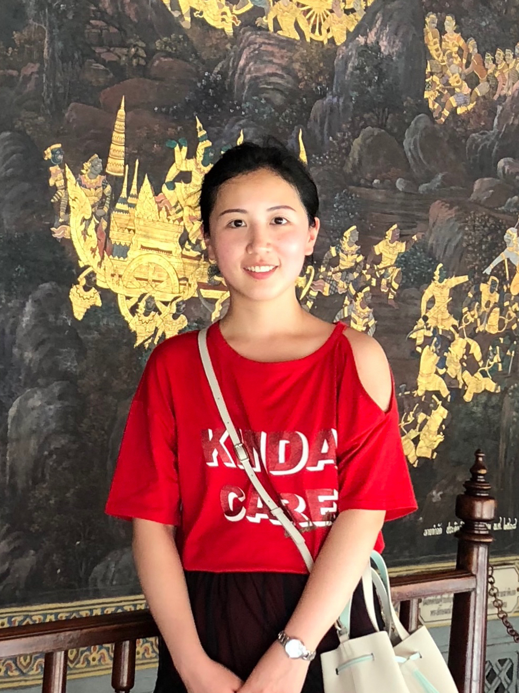
Wu Yiyang (吴伊扬)
Phd Student